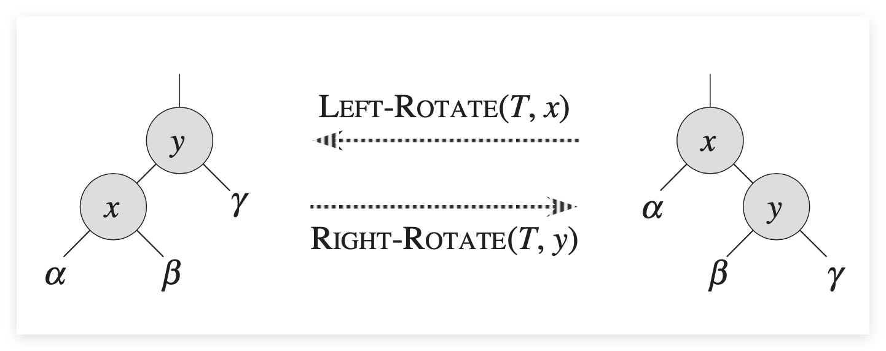
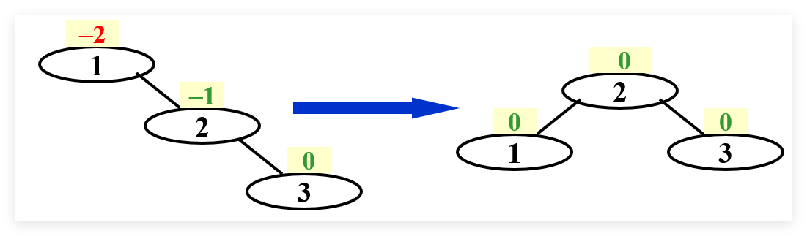
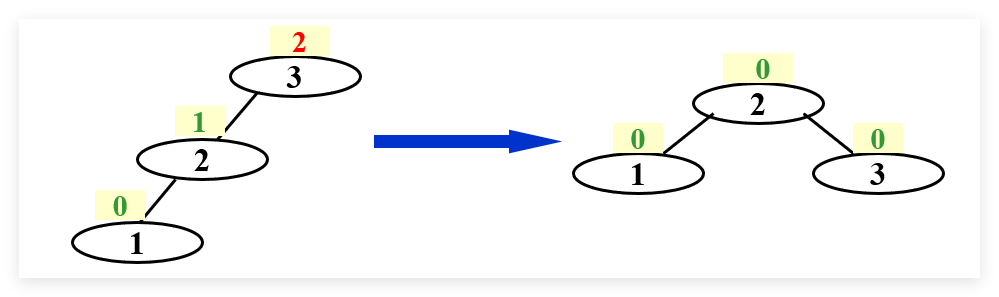
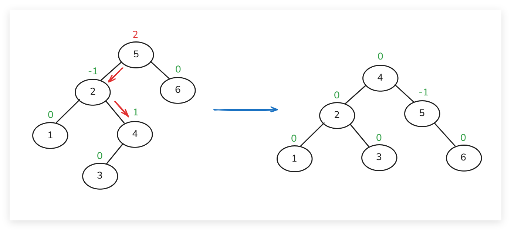
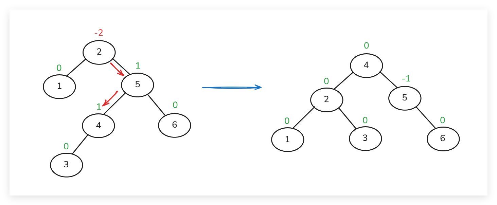

AVL Trees,Splay Tree & Amortized Analysis
约 2721 个字 预计阅读时间 14 分钟
AVL 树¶
定义¶
AVL Tree 的名字由来于它的三个作者 Adelson , Velskii , Landis ，其一般定义如下：
一个二叉树的所有节点，其左子树和右子树高度差小于等于一，这颗二叉树就被称为 AVL Tree
Balance Factor
我们使用 BF(Node) 来表示该节点左子树高度减去右子树高度，即 \(h_L -h_R\)
需要注意的是，在 ADS 课程中，我们均定义空树的高度为 -1 ，那么只有一个根节点的树高度为 0
对于 AVL 树，则有 BF(Node) = -1, 0, or 1
根据 AVL 树的性质，我们也可以确定其高度 h 仍然为 \(O(\ln n)\) 量级
其最少节点树的递推公式为 \(n_h= n_{h-1} +n_{h-2} +1\) ，其中 \(n_{-1} = 0,n_0 =1\) ，那么递推可以得到 \(n_6 =33\)
维护¶
关于 AVL 树的维护，最重要的操作在于 Left-Rotate 和 Right-Rotate，其记忆要点为各个叶节点的左右顺序不变：

按照新插入的新插入的节点与失衡的节点的位置关系，可以将 AVL 树的维护分为两类四种：
Single Rotation¶
RR rotation
顺序插入 1,2,3 ，有下图左示 BST(Binary Seach Tree)。此时节点1的 BF 等于 -2，需要对其进行调整
由于 Trouble Maker 节点3位于 Trouble Finder 节点1的右子树的右子树内，这种维护方法称为 RR rotation
具体方式为对 Trouble Finder 节点1进行一次左旋转，得到右示新的 AVL 树

LL rotation
同理，顺序插入 3,2,1 ，有下图所示 LL rotation 的维护，即对 Trouble Finder 节点3进行一次右旋转，得到右示新的 AVL 树

Double Rotation¶
LR rotation
按照 5,6,2,1,4,3 顺序插入，得到左示 BST ，此时节点5的 BF 为 2 ，且 Trouble Maker 节点3位于节点5的左子树的右子树内，因此应使用 LR rotation 进行维护
具体的维护方法为，先对 Trouble Finder 的左节点进行左旋转，再对 Trouble Finder 进行右旋转

小技巧
如果难以在脑中进行两次旋转，可以记住上图节点4,2,5的位置关系，其它节点按照原来的左右顺序接入即可
RL rotation
按照 2,1,5,6,4,3 顺序插入，得到左示 BST ，此时节点2的 BF 为 -2，且 Trouble Maker 节点3位于节点2的右子树的左子树内，因此应使用 RL rotation 进行维护
具体的维护方法为，先对 Trouble Finder 的右节点进行右旋转，再对 Trouble Finder 进行左旋转

通过旋转修正后的高度一定与插入新节点之前的高度相同，这意味着我们只需要处理第一个报错的节点即可
Splay 树¶
定义¶
从一个空树开始，连续 M 个对该树的操作的时间复杂度不超过 \(O(M\log N)\) 的二叉树，称为 Splay 树
根据定义，对该树的 M 次操作时间均摊下来，每个操作都需要 \(O(\log N)\) 。Splay(伸展)的核心思想在于，每当某一个节点被访问(包括插入、查询、删除)，都要通过 AVL 树 Rotation 的方式将其移动至根节点
维护¶
对于 Splay 树的维护，我们先对要操作的节点一个简单的定义：
- 我们要移动至根节点的非根节点 X
- 节点 X 的父节点 P
- 节点 X 的 Grandparent 节点 G
Case 1：
父节点 P 是根节点，那么直接对节点 X 和 节点 P 做一次对应方向的 Rotate 即可
Case 2：
父节点 P 不是根节点，且不用管节点 G 是否是根节点
此时，根据 X,P,G 的位置关系，可以分为 Zig-zag 和 Zig-zig 来处理

More Example

均摊分析¶
Amortized Analysis 分析的是从初始状态开始，连续 M 次对数据结构的操作所用的均摊时间，它并不涉及概率分布，因此与平均时间亦有所不同。由于 Amortized Analysis 需要涉及任意操作的组合，其计算结果应大于平均时间。
其主要的分析方法有以下三种：
- Aggregate analysis
- Accounting method
- Potential method
Aggregate Analysis 累加法¶
对于一个长度为 n 的操作序列，在最坏情况所用的总时间为 \(T(n)\)，那么其每个操作均摊时间可以简单认定为：
Accounting Method 借款贷款法¶
其核心思想是为每个操作分配一个 amortized cost \(\hat{c_i}\) ，它与该操作的 actual cost \(c_i\) 的差值称为 credit ，并且总有: \(\sum \hat{c_i} \ge \sum c_i\)
那么均摊时间可以认定为：
amortized cost 怎么定义的还没搞懂
Potential Method 势能分析法¶
该方法给 credit 一个更详细的定义：
其中，\(D_i\) 表示第 i 步操作后的数据结构， \(\phi(D_i)\) 称为势能函数(Potential Function)，且一定有 \(\phi(D_n) \ge \phi(D_0)\)
为了取巧，可以定义 \(\phi(D_0)=0,\phi (D_i)\ge 0\)
相比于 \(c_i\) 表示第 i 步操作的消耗，\(\phi(D_i)\) 表示该数据结构在完成了第 i 步操作的势能。势能与具体的操作没有关系，只与整个局面的状态有关，与物理学意义上的势能定义类似 (保守力)
那么每一步操作的均摊消耗即可定义为 \(c_i+ \phi(D_i) - \phi(D_{i-1})\) ，势能分析法中的均摊思想体现在如果该操作消耗 \(c_i\) 很大，可以通过定义的势能函数让 \(\phi(D_i) - \phi(D_{i-1})\) 的结果尽可能小。由于数据结构最终势能是上升的，代价小的操作可以分摊代价大的操作的势能。
小技巧之二
势能函数 \(\phi(D_i) -\phi(D_{i-1})\) 的量级应与 \(\sum_{i=1}^n c_i\) 相同，否则会影响估算的精确度
如 Splay 树的 \(\sum_{i=1}^n c_i\) 是 \(O(\log n)\) ，那么合理的势能函数也应满足 \(\phi(D_i) -\phi(D_{i-1})\) 为 \(O(\log n)\)
栈 Push & MultiPop¶
对于一个栈，其有 Push 一个元素进入栈以及从栈中 MultiPop k 个元素两种操作。
虽然看起来 MultiPop 操作的时间消耗为 \(\min(sizeof(Stack),k)\) ，但是实际上对于每个元素，它最多只有一次入栈和出栈，总时间消耗不应该超过 \(2n\)
此时就需要用到均摊分析，由于 MultiPop 是时间消耗大的操作，我们需要让该步操作势能差值尽可能小。由于无论是 Push 操作还是 Pop 操作，它们都改变了栈中元素的个数，我们可以想到以栈内元素个数作为势能函数 \(\phi(D_i)\) 的定义
那么分析各个操作的 \(\hat{c_i}\) 可得：
由于栈中最后元素个数总是大于等于零，即 Push 压入的元素个数大于等于 Pop 出的元素个数，所以有：
Splay Tree¶
对 Splay 树的调整操作中，zig 包含一次旋转，zig-zag 和 zig-zig 都包含两次旋转，成本为 2。如果势能函数的构造不能把调整操作的常数 1 或 2 抵消掉，最终的均摊时间将会是 worst-case \(O(n)\)
注意到 Splay 操作中，会将所访问的节点翻转到根节点；同时，翻转代价高的操作往往更大程度上的降低了树高（比如前面例子中，将节点 1 从叶节点位置翻转到根节点，大致将树高缩减为原来的一半）。所以我们考虑一个跟节点高度相关的（或类似的）势能函数：
我们用 \(R(i)\) 表示节点 i 的 rank ，则 \(R(i) = \log S(i)\) 。选取 rank 之和作为势能函数的好处是除了 \(X\),\(P\),\(G\) 三个节点外，其它节点在 Splay 操作中的 rank 均保持不变，因而可以简化计算

再次对照之前三种 Splay 操作，并计算其均摊时间：
对于 Zig
由于 \(P\) 从根节点变为非根节点，所以有 \(R_2(P) - R_1(P) \le 0\) 。因此得到：
对于 Zig-zag
观察 Zig-zag 后树的形状，可以发现 \(S_2(X) = S_2(P) +S_2(G) +1\) ，那么有 \(S_2^2(X) / (S_2(P) * S_2(G))\ge 4\) ，经转换可得引理 \(R_2(P) +R_2(G)\le 2R_2(X) -2\)
并且操作前后，\(G\) 和 \(X\) 分别为根节点，即 \(R_1(G) = R_2(X)\)。因此得到：
对于 Zig-zig
（有时间补充）
结合以上三种情况，取均摊时间消耗最大的情况，必定有：
注意这个 1
Splay 树的一次维护最多会出现一次 Zig 的 Single Rotation，所以上述单步操作的均摊成本不等式中的 1 也最多只会出现一次，所以不用担心最终得到 \(O(n)\) 的复杂度
对节点 \(X\) 的操作可能会经过多次旋转，但是最终该节点会被移至根节点处，那么均摊成本和可以表示为：
很明显，均摊成本为 \(O(\log n)\) 级别的
总结(偷过来的)
不论是做题还是真的在分析自己设计/遇到的某种算法的复杂度，我们都可以通过这样的流程来思考（尤其是做 ADS 考试题，因为它给出了选项，用这样的思路就很简单了）：
- 思考什么操作的代价较大？
- 思考这个操作会对局面造成何种影响？局面会发生何种变化？
- 如何把这种变化量化，把这样的变化映射到势能的下降？